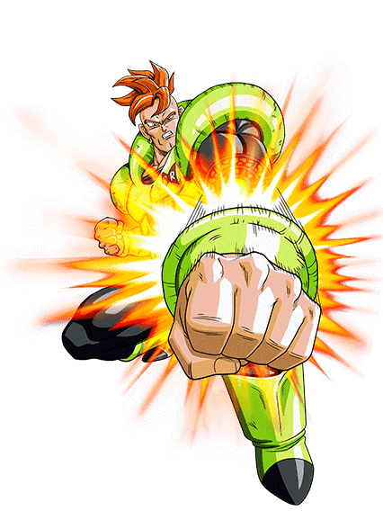

Galería Dragon Ball Z
Dokkan

Dokkan

Artwork

Androide 19

Androide 13

Androide 16

Androide 18

Dende

Babidi

Bardock

Beerus

Bulma

BuuGordo

Celula

ChiChi

Dende

Dispo

Dodoria

Dr. Gero

Yamcha

Freezer

Ginyu

Ginyu force

Gohan

Goku

Gotenks

Gran Kaio shin

Gran kaio sama

Grand priest

Jiren

kaio del este

Kaio del Norte

Kaio del oeste

Kaio shin del este

Kaio shin del norte

Kaio shin del sur

Kaio shin del Oeste

Kibito

Kibito shin

Krilin

Lunch

Marcarita

Mr Satan

Nail

Picolo

Raditz

Roshi

Tenshinhan

Toppo

Trunks

Vegeta

Vermoud

Whis

zarbon

Zeno